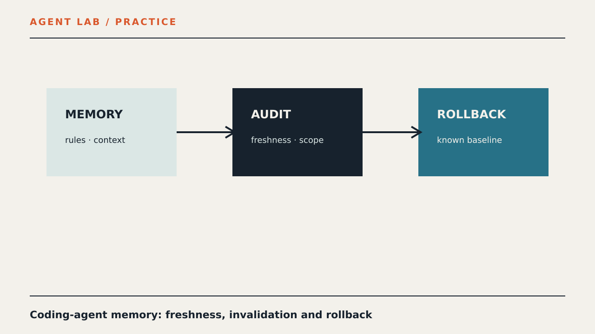

PRACTICE / AGENT LAB
Coding-Agent Memory as a Dependency: AI Agent Memory Audit

This bounded field note describes how to test an event-driven AI agent workflow when a worker fails and an event must be delivered again.
Test boundary
The test covers event creation, worker failure, retry delivery and an auditable result. It does not claim production reliability.
Minimal scenario
Create one event, process it once, force a worker failure, deliver the same event again and record both attempts with a stable event ID. AI agents should receive only the capabilities required for this scenario.
Verification
Check that the retry does not create an uncontrolled duplicate, the final state is explicit and the audit trail contains the event, attempts and outcome.
Limitations
This is a reproducible test scenario, not a security certification or a guarantee of production behavior.
Related measurements
This material targets the measured clusters AI agent memory and AI agents without promising a search result.